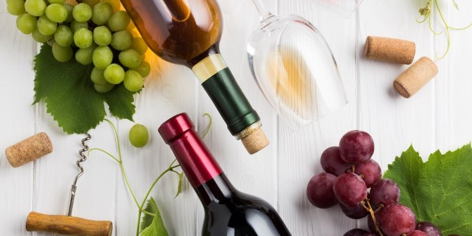

LEXIQUE
LEXIQUE
Il est parfois difficile de faire un choix parmi une sélection de vins lorsque vous manquez de connaissances. Découvrez les bases de l’œnologie grâce à notre glossaire qui vous permettra de mieux déguster !
Ces noms tels que Saint-Emilion, Chablis, Bordeaux, etc. permettent de situer la provenance du vin. Nous avons également AOC signifiant Appellations d’Origine Contrôlée.
Le cépage est l’ensemble de la vigne avec ses raisins et ses feuilles. Ce terme permet de différencier les couleurs. Par exemple les cépages Syrah et Pinot Noir désignent un vin rouge tandis que le Chardonnay ou le Muscat, désignent eux, des vins de cépages blancs.
cette pratique permet de séparer le vin de son dépôt afin de l’éliminer.
Le millésime est l’année de vendange. La qualité du vin varie selon son année de production suite aux conditions climatiques variables. Par conséquent, la qualité du millésime varie d’une région à l’autre. Voici les meilleurs millésimes des plus grandes régions viticoles de France :
Vin restant en cave plusieurs années (de 3 à 5 ans) afin de se bonifier. Ce dernier ne se boit pas lorsqu’il est trop jeune, en attend donc qu’il arrive à maturité.
La viticulture correspond à la culture de la vigne. La France est un pays historique dans la culture de la vigne. Les régions viticoles sont présentes aux quatre coins du pays, du Languedoc-Roussillon en passant par la région de Bordeaux, la Vallée de la Loire ou encore la Bourgogne. Chacune de ces régions propose des types de vins aux arômes et nuances propres à chacune.
Appellation d’Origine Contrôlée
Appellation d’Origine Protégée
Autorisation administrative de commercer la récolte du raisin
Lieu où se déroule la vinification (étape de transformation du raisin vers un vin blanc, rouge ou rosé)
Fermentation du moût de raisins dans les cuves
Fin de la période de dormance, développement des bourgeons
Processus chimique où le jus sucré du raisin se transforme en alcool
Période suivant les vendanges et le pressurage et qui consiste à mettre en cuve le moût du raisin, laissant le jus obtenir des tanins et une robe colorée.
Etape où l’on presse le raisin pour extraire son jus
Période où le grain du raisin grossi et change de couleur